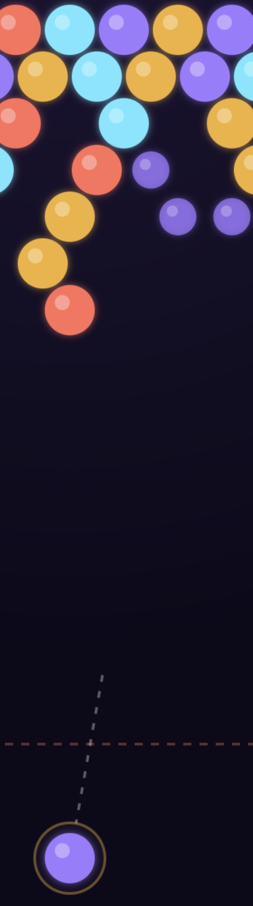
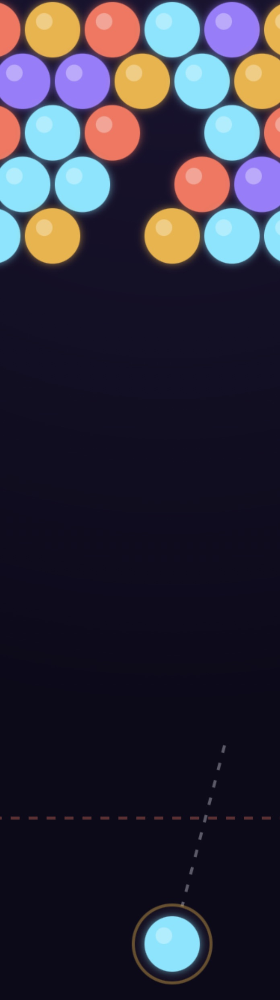
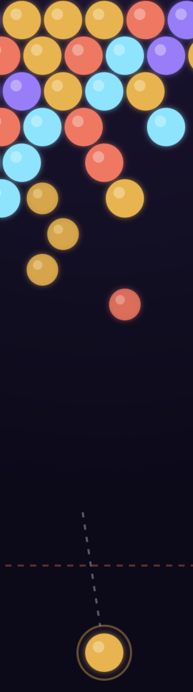

Free · No download · Play in browser
Play Neon Pop, a free bubble shooter game you can jump into instantly — aim, shoot, and match colors to clear the board before the bubble clusters reach the bottom.
How to play Neon Pop
Neon Pop is a classic aim-and-shoot bubble shooter game: move your mouse (or drag your finger on mobile) to aim, then click or tap to shoot a colored bubble up into the stack. Land it next to two or more bubbles of the same color to match three or more and pop the whole group at once. Popping a group can trigger a chain reaction — any bubble clusters left floating without support after a match drop away too, turning one good shot into a bigger combo and a higher score. Every few shots, a new row of colored bubbles pushes down from the top, so the real skill in this puzzle game is clearing efficiently rather than shooting at random. The run ends if the bubbles reach the dashed danger line near the bottom — so keep the board clear and chase a new high score.
Neon Pop screenshots



Controls
| Action | Desktop | Mobile |
|---|---|---|
| Aim | Move mouse | Drag finger on screen |
| Shoot | Click | Tap |
| Start / Retry | Click the on-screen button | Tap the on-screen button |
Tips & strategies
- Use wall bounce shots on purpose. Bubbles bounce off the side walls, so an angled bank shot can reach gaps a straight shot never could.
- Watch the "Next" preview. Knowing your next bubble's color ahead of time lets you plan two shots at once instead of reacting one at a time.
- Hunt for bubble clusters, not just matches. Popping bubbles that are holding up a larger disconnected cluster clears far more of the board — and scores a bigger combo — than a single small match.
- Don't ignore the edges. Colored bubbles pile up fastest along the outer columns since they're easy to miss — keep an eye on both sides, not just the center.
- Every 7th shot adds a row. Pace yourself — rushing wasted shots just brings the danger line closer faster.
Game features at a glance
- Simple aim-and-shoot controls — mouse or touch, no keyboard required
- Classic match-3 bubble popping mechanics with satisfying chain reactions
- Bonus combo scoring for clearing disconnected bubble clusters
- Wall-bounce shots for reaching tricky angles
- High score saved locally in your browser
- Increasing difficulty as new rows of bubbles push in
- Instant play in-browser — no plugins, no installs, no download
About this game
Neon Pop is an original PlayItNow build, made in-house for instant browser play — no plugins, no downloads, nothing to install. If you're searching for a free bubble shooter game online in the spirit of classic bubble shooter and match-3 puzzle games like Puzzle Bobble, Neon Pop runs on that same aim-and-shoot, color-matching formula. It's a relaxing yet challenging casual game: easy to learn, satisfying to play, and hard to put down once the combos start chaining, all wrapped in the neon-arcade look used across the rest of the site.
Neon Pop — FAQ
How do I pop bubbles?
Aim and shoot a bubble so it lands touching two or more bubbles of the same color — matching 3 or more in a connected group pops them all at once.
What happens to bubbles that get disconnected?
Any bubbles left floating without a path back to the top after a pop fall away automatically, and they're worth even more points than the original match.
Is my best score saved?
Yes — your best score is saved locally in your browser, so it'll still be there next time you visit on the same device and browser.
Does it work on mobile?
Yes — drag your finger to aim and tap to shoot, the same as using your mouse on desktop.
Is Neon Pop like other bubble shooter games?
Yes — Neon Pop follows the same classic bubble shooter formula popularized by games like Puzzle Bobble: aim, shoot, match three or more colored bubbles, and clear the board before it fills up. If you enjoy free online bubble shooter or match-3 puzzle games in general, the core gameplay will feel instantly familiar.
Looking for something else? Browse all games on PlayItNow.